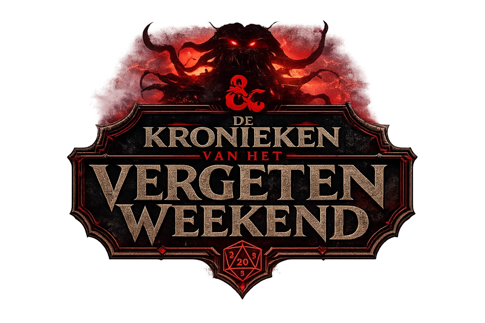
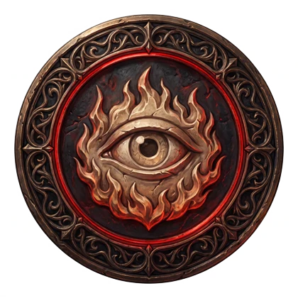

Wachter
De Schaduw heeft jou gekozen
Vanaf nu werk jij in het geheim voor de Schaduwkoning. Niemand mag het weten. Houd je scherm uit het zicht.
De Ronde Tafel
Tik op een Wachter om zijn rol en kracht te zien.
Kies een Wachter aan de tafel.
De Wachterstocht
Vanavond in Château de Bouillon. Vijf beproevingen; elke volbrachte opent een vak van de Reliekenkist.
De Schaduw ontwaakt over
Vrijdag 13 november, 16:00 · de Ardennen
Godfried vraagt je hulp
In de laatste nacht moet het vuur de Wachters herkennen. Daarvoor heb ik herinneringen nodig. Vertel me iets over een andere Wachter: een avontuur van vroeger, een eigenaardigheid, iets wat de anderen misschien niet weten. Niemand ziet van wie het komt.
Insturen kan zodra je online bent ingelogd.

Jouw rol
Deze boodschap is nog verzegeld. Godfried breekt het zegel zodra de Guild Hall opent.
Bewaar deze link goed. Hij is alleen voor jou.
Deze boodschap is niet voor jou bestemd. Open de link die je van de organisatoren kreeg.
De Kronieken van het Vergeten Weekend · Bouillon